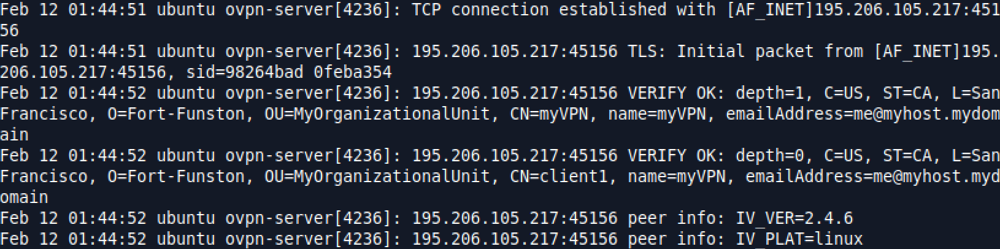

Introduction
Recently I want to learn how to setup a VPN-over-TOR network, my network traffic will like:
1 | kali -> Tor -> OpenVPN server ... |
Basically, I need to have a working OpenVPN server on my Ubuntu which allows my Kali to create a VPN connection through it. Then on my Kali, I need to route all traffic through Tor instead of connecting directly to the OpenVPN server. The following are my notes on it.
Setup OpenVPN server on Ubuntu
I follow this OpenVPN guide for Ubuntu.
The main steps are:
- Generate a Certificate Authority (CA): a CA serves to establish a common trust between the server and the client as the their certificates will be issued by CA.
- Generate
Diffie-Hellmanparameters: DH parameters are used to exchange key. DH parameters will be sent to the client, this allows them to generate a shared pre-master secret. - Generate a server certificate: This allows the client to authenticate server.
- OpenVPN server configuration: one thing important is to enable TCP support for OpenVPN. This is because Tor doesn’t support UDP except DNS.
Configure OpenVPN client on Kali
First, I need to generate a client certificate, and transfer the CA certificate, the client certificate (including the client private key) securely to the client machine (e.g. using scp tool).
Then configure OpenVPN client-side according to the server configuration.
Routing All Traffic Through Tor in Kali
I use the Kalitorify tool to create a transparent proxy through Tor on Kali. The setup is quite straightforward.
VPN-over-TOR Test
As you can see from the screenshot, my client IP displayed on OpenVPN server is indeed an IP of a Tor exit node.

Useful links
Tor Project: FAQ
Why Tor doesn’t support UDP?
OpenVPN - Debian Wiki
What is the difference between .pem , .csr , .key and .crt?
Diffie–Hellman key exchange
What is the principle behind OpenVPN tunnels
tuntap in Linux kernel
The Transport Layer Security (TLS) Protocol Version 1.2